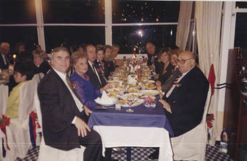

Denktaş muzip bir insan; en sıkıntılı ya da en üzgün olduğu anlarda bile araya ince mizah anlayışını gösteren bir söz, bir fıkra sıkıştırıverir. Bunu hiç kendini zorlamadan, iki olağan arkadaş ya da arkadaş topluluğu içinde söylenivermiş bir fıkra, hatta yapılan bir alaycılık içinde mırıldanarak fısıldar. Çoğunlukla dinleyene kendi kişisel yorumunu yapması, düşünmesi için de bir boşluk bırakır.
Girne’deki yazlık evinde, randevulu randevusuz Kıbrıslı Türklerden uğrayanlar sık görülür. Hiç hayır demeden, iki eli kanda olsa bile bir merhaba der ya da el öptürür. Daha doğrusu gelenler, genellikle genç olanlar el öpmeyi isterler, o da hayır demez.

1997 Yılbaşı
1996 yılı içinde, KKTC’yi ziyaret eden bir Türk turist grubu da evine gelivermiş. Bunu derinleştirerek “Selimiye Camii’ni, Lefkoşe Müzesi’ni gezdikten sonra bana da gelmişler,” esprisi ile anlatarak, kendi kişiliğinin Kıbrıs mücadele tarihi içindeki yerini belki benliğinde duyar, düşünür ancak bunu anlatırken sizi güldürmek için, “Ben de tarihî eserler gibi müzelik oldum; yaşlandım ve eskidim,” muzipliği ile öne çıkarır. 21 Ocak 1996’da, Bülent Ecevit’le birlikte TRT’deki sabah canlı yayınında bile bunu bir fıkra gibi anlatıverdi. Söylemesinin gerekçesi ise, Ecevit’in Denktaş’ı överek, “Sayın Denktaş, Kıbrıs Türk mücadelesinin ta başından beri içinde olan, onu sürükleyen bir devlet adamıdır,” demesiydi. Denktaş, Ecevit’in ciddi bir tavır içinde ifade ettiği bu görüş karşısında, muzip kişiliğini ayna gibi yansıtan fıkrasını anlatıverdi. “Zaten önce Lefkoşe’deki müzeyi ziyaret ediyorlar sonra da beni,” deyiverdi.
Bu alaycı tavır karşısında, olağanüstü nazik bir insan olan Ecevit önce ne diyeceğini bilemedi; ardından da hafif bir tebessümle olayı geçiştirmeyi başardı.